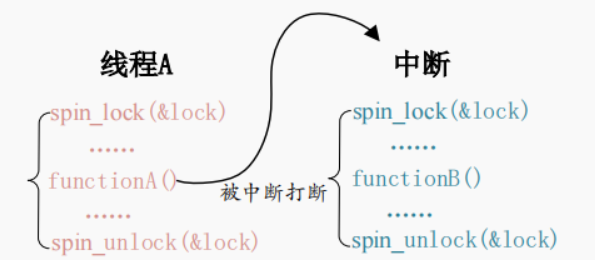
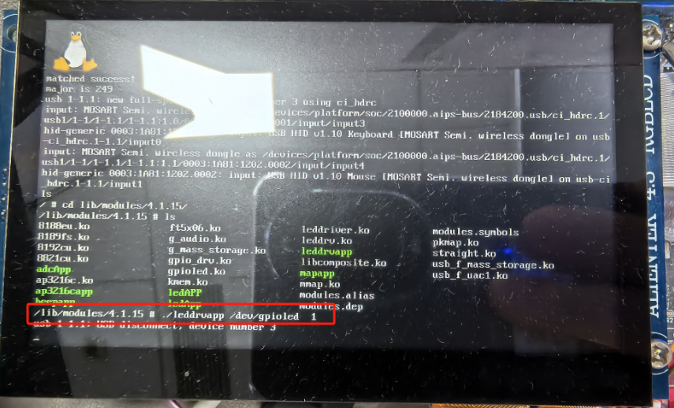
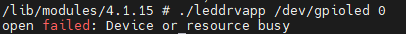

驱动开发-并发与竞争03自旋锁
自旋锁
自旋锁的核心思想是 “忙等待” (Busy-Waiting)。当一个执行单元（CPU 核心、进程上下文线程、中断上下文等）尝试获取一个已经被其他执行单元持有的自旋锁时，它不会进入睡眠状态（阻塞），而是会在一个紧凑的循环中不断地检查锁的状态（”旋转”），直到锁被释放。
忙等待：
- 核心行为： 获取锁失败的执行单元在 CPU 上循环检查锁的状态 (
while (lock_is_held);)。它持续占用着 CPU 核心，不做其他有用工作。 - 目的： 避免了进程上下文切换的开销（保存/恢复寄存器、更新数据结构、调度等）。在锁被持有时间非常短的情况下，忙等待的总开销可能小于睡眠唤醒的开销。
- 代价： 如果锁被持有时间较长，忙等待会浪费大量 CPU 周期，显著降低系统性能。因此，自旋锁只适用于临界区执行时间非常短的场景。
- 核心行为： 获取锁失败的执行单元在 CPU 上循环检查锁的状态 (
互斥性：
- 自旋锁保证在任意时刻，最多只有一个执行单元持有锁，从而确保对共享资源的互斥访问。
不可睡眠：
- 最重要规则： 在持有自旋锁期间，执行单元绝对不能睡眠（阻塞）或主动放弃 CPU（如调用
schedule(),kmalloc(GFP_KERNEL), 等待信号量等）！ - 原因：
- 死锁风险： 如果持有锁的执行单元 A 睡眠了，另一个执行单元 B 尝试获取该锁时会在其 CPU 上忙等待。执行单元 A 需要被唤醒才能释放锁，但唤醒它的执行单元 C 可能也需要获取同一个锁，导致 C 也忙等待。最终，没有执行单元能释放锁，系统死锁。
- 性能灾难： 忙等待的 CPU 无法做任何有用工作，而持有锁的进程在睡眠，导致锁长时间无法释放，其他所有等待该锁的 CPU 都在空转。
- 最重要规则： 在持有自旋锁期间，执行单元绝对不能睡眠（阻塞）或主动放弃 CPU（如调用
SMP (Symmetric Multi-Processing) 优化：
- 在单核 CPU 上，自旋锁的实现相对简单（通常只需要关闭抢占，防止当前任务被更高优先级任务抢占导致长时间持有锁）。
- 在多核 CPU 上，自旋锁的实现必须高效处理多个核心同时竞争锁的情况。现代内核的自旋锁通常基于底层硬件的原子操作和内存屏障指令实现。常见的底层实现包括：
- Test-And-Set (TAS)： 原子地测试一个内存位置的值并设置新值。
- Compare-And-Swap (CAS)： 更强大的原子操作（前面原子操作部分讲过）。
- Ticket Lock： 一种更公平的自旋锁，避免某些 CPU 核心一直抢不到锁（饥饿）。每个竞争者获取一个递增的“票号”，锁按票号顺序释放。
spinlock_t在 x86 上通常使用 ticket lock。 - Queued Spinlock： 进一步优化，将等待者组织成队列，减少缓存行颠簸（多个 CPU 反复读写同一个表示锁状态的内存位置，导致缓存失效）。
内存屏障：
- 自旋锁的获取和释放操作内部都隐含着内存屏障 (Memory Barrier)。
- 获取锁 (Acquire Barrier)： 确保在进入临界区（获取锁之后）之前，所有在锁获取操作之前的读/写操作已经完成（不会被重排到临界区内），并且临界区内的读/写操作不会被重排到锁获取操作之前。
- 释放锁 (Release Barrier)： 确保在离开临界区（释放锁）之前，所有在临界区内的读/写操作已经完成（不会被重排到释放锁之后），并且释放锁操作之后的读/写操作不会被重排到临界区内。
- 作用： 保证临界区内的内存访问操作对其他 CPU 核心是可见的，并且顺序符合程序逻辑，防止数据竞争和不一致。
关闭抢占 (仅限进程上下文)：
- 在单核可抢占内核中，即使没有其他 CPU 核心，一个高优先级任务也可能抢占当前持有自旋锁的任务。
- 为了防止这种情况（避免高优先级任务在同一个 CPU 上忙等待同一个锁导致死锁），在进程上下文中获取自旋锁时，内核会自动关闭当前 CPU 核心的抢占 (
preempt_disable())。 - 释放锁时会重新开启抢占 (
preempt_enable())。 - 在中断上下文或 SMP 环境中，抢占关闭不是主要问题（中断上下文不可被抢占，SMP 有其他核心在忙等）。
自旋锁API函数
核心变量类型
1 | typedef struct spinlock { |
初始化
1 | DEFINE_SPINLOCK(my_lock); // 静态初始化一个名为 my_lock 的自旋锁 |
获取锁：
1 | void spin_lock(spinlock_t *lock); |
- 尝试获取锁
lock。 - 如果锁已被占用，则在当前 CPU 核心上忙等待，直到锁被释放。
- 在单核可抢占内核中，获取锁时会关闭当前 CPU 的抢占。
- 包含必要的获取内存屏障。
释放锁：
1 | void spin_unlock(spinlock_t *lock); |
- 释放锁
lock。 - 在单核可抢占内核中，释放锁时会重新开启当前 CPU 的抢占。
- 包含必要的释放内存屏障。
尝试获取锁 (非阻塞)：
1 | int spin_trylock(spinlock_t *lock); |
- 尝试获取锁
lock。 - 如果锁当前可用，则获取它并返回 非零值 (通常是 1)。
- 如果锁已被占用，则立即返回 0，不会忙等待。
- 用途： 在不能等待或不确定锁状态时尝试获取锁，避免可能的忙等待。成功与否需要检查返回值。
中断安全的 API 函数
当中断处理程序（特别是软中断或硬中断）和进程上下文可能访问同一个由自旋锁保护的共享资源时，必须使用中断安全的 API。否则，在进程上下文持有锁时发生中断，中断处理程序尝试获取同一个锁，会导致中断处理程序在同一个 CPU 上忙等待。由于持有锁的进程上下文被中断抢占，无法释放锁，导致死锁。

获取锁 + 保存本地中断状态并禁用中断：
1
spin_lock_irq(spinlock_t *lock);
- 在获取锁
lock之前，保存当前 CPU 的中断使能状态到 EFLAGS 寄存器（隐含）并禁用本地 CPU 的中断（硬中断 + 软中断）。 - 然后获取锁（行为同
spin_lock）。 - 为什么？ 防止在获取锁之后、进入临界区之前发生中断。确保临界区执行期间，当前 CPU 不会被中断处理程序（可能访问同一共享资源）抢占。
- 释放时： 需要配对使用
spin_unlock_irq。
- 在获取锁
释放锁 + 恢复本地中断状态：
1
spin_unlock_irq(spinlock_t *lock);
- 释放锁
lock。 - 然后恢复之前保存的本地 CPU 中断使能状态（可能重新开启中断）。
- 必须与
spin_lock_irq配对使用。
- 释放锁
获取锁 + 保存本地中断状态并禁用中断 (显式保存状态)：
1
2unsigned long flags;
spin_lock_irqsave(spinlock_t *lock, unsigned long flags);- 在获取锁
lock之前，保存当前 CPU 的中断使能状态到变量flags（由调用者提供）并禁用本地 CPU 的中断（硬中断 + 软中断）。 - 然后获取锁。
- 优点： 比
spin_lock_irq更安全。适用于无法确定当前中断是否已经被禁用的情况（例如，在调用深层函数中加锁）。它总是保存当前状态并禁用中断，释放时再精确恢复。 - 最佳实践： 在中断上下文不确定的情况下，优先使用
spin_lock_irqsave/spin_unlock_irqrestore。
- 在获取锁
释放锁 + 恢复本地中断状态 (使用保存的状态)：
1
spin_unlock_irqrestore(spinlock_t *lock, unsigned long flags);
- 释放锁
lock。 - 然后根据
flags变量恢复之前保存的本地 CPU 中断使能状态。 - 必须与
spin_lock_irqsave配对使用。
- 释放锁
仅禁用软中断 (Bottom-Half) 的锁：
1
2spin_lock_bh(spinlock_t *lock);
spin_unlock_bh(spinlock_t *lock);spin_lock_bh: 获取锁lock之前，仅禁用本地 CPU 的软中断 (Bottom Halves, 如 Tasklet, Softirq)，不关硬中断。spin_unlock_bh: 释放锁lock之后，重新启用本地 CPU 的软中断。- 用途： 当共享资源只会被进程上下文和软中断访问，而不会被硬中断访问时使用。性能略好于完全关中断的版本。常见于网络栈等场景。
实验：
我们实验对LED的设备文件进行管理，在有单元对其进行访问的时候，其它所有单元都不能对其进行访问，主要的原理如下：
定义自旋锁变量
在设备结构体struct leddev_struct中定义了自旋锁变量：1
spinlock_t lock; /* 自旋锁 */
初始化自旋锁
在驱动入口函数leddrv_probe中初始化自旋锁：1
2/* 初始化自旋锁 */
spin_lock_init(&leddev->lock);使用自旋锁保护共享资源
代码中使用int dev_status;变量作为设备使用状态的标志（0 表示未使用，>0表示已使用），这是一个共享资源，需要通过自旋锁进行保护。- 上锁操作：
spin_lock_irqsave(&leddev->lock,flags);
这个函数会：- 保存当前中断状态到 flags
- 禁用本地中断
- 获取自旋锁
- 解锁操作：
spin_unlock_irqrestore(&leddev.lock, flags)
这个函数会：- 释放自旋锁
- 恢复之前保存的中断状态
- 上锁操作：
代码：
驱动代码：
1 |
|
应用代码：
1 |
|
实验效果：
我们首先在开发板上启动驱动模块，随后使用命令打开led灯
我们再通过mobaxterm使用命令关闭led灯：

可以发现显示open failed: Device or resource busy，通过结果可以知道该设备已经被占用了。